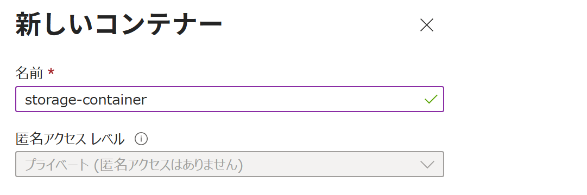

Azure ポータル で ストレージ アカウント を作成する
適用対象: ✔️ ストレージ アカウント ✔️ コンテナー
この演習では、Azure ポータル を使用して ストレージ アカウント と コンテナー を作成します。
所要時間: 約 15 分
先行の演習
この演習を始める前に リソースグループを作成する を完了してください。
Azure ストレージ
Azure ストレージは、さまざまなデータを保存するための クラウド ストレージ基盤です。
いくつかのストレージ サービスを、用途に応じて使い分けます。

ストレージ サービス
ストレージ サービス は、Azure ストレージで利用するデータ保存サービスの総称です。
Azure ポータルのメニューから 個々のストレージ サービスを利用できます。

| ポータルでの メニュー | サービス / 拡張機能 | 概要・主な特徴 | |
|---|---|---|---|
| [コンテナー] | Blob Storage | 画像やログなどを保存する汎用的なオブジェクト ストレージ（フラットな名前空間） | |
| Azure Data Lake Storage Gen2 (ADLS Gen2) | Blob Storage を基盤に、機能を拡張したデータレイク向けストレージ（階層型名前空間） | ||
| [テーブル] | Table Storage | 非リレーショナルな構造化データ向け NoSQL データストア | |
| [キュー] | Queue Storage | アプリケーション間で非同期メッセージをやり取りするためのキューサービス | |
| [ファイル共有] | Azure Files | ファイル共有プロトコル(SMB/NFS)に対応したファイルストレージ | |
Azure Data Lake Storage Gen2 (ADLS Gen2)
ADLS Gen2 は完全に独立したサービスというより、Blob Storage を拡張して 階層型名前空間 の機能を有効化したものです（Blob Storage はフラットな名前空間）。
階層型名前空間は ストレージアカウント単位で設定します。


| フラットな名前空間 | 階層型名前空間 |
|---|---|
| データをディレクトリ階層ではなく、平らな名前の集合として扱う方式。 名前に / を含んでいても実体としてのディレクトリではない。 |
データをファイルシステムのように、ディレクトリ階層で管理できる方式。 |
マルチプロトコルアクセス
ADLS Gen2 の BLOB は、内部では階層型名前空間で管理されますが、外部からのアクセスには 階層型名前空間での読み書きと フラットな名前空間での読み書きの 両方に対応します。

BLOB ＜ コンテナー ＜ ストレージ アカウント
Blob Storage は BLOB（Binary Large Object）を保存するサービスです。
BLOB はコンテナーに保存し、コンテナーは用途に応じて複数作成できます。

タスク 1: ストレージ アカウント の作成
ストレージ アカウント を作成します。
ストレージ アカウントは、ストレージサービスを利用・管理するための管理単位です。
- 上部の検索ボックスに
ストレージ アカウントと入力します。 - [ストレージ アカウント] を選択します。
- [＋ 作成] を選択します。
- 使用する サブスクリプション を選択します。
- リソース グループで [msaz-rg] を選択します。
- ストレージ アカウント名に
storagev2msaz1と入力します。
ストレージ アカウント名は既に使用されています。 と表示された場合は、任意の別の名前を入力してください。 - 利用可能な リージョン を選択します。
- パフォーマンスで [Standard] を選択します。
- 冗長性で [ゾーン冗長ストレージ (ZRS)] を選択します。
- [次へ] を選択します。
- [詳細] タブで、設定項目を一通り確認します。
- 個々のコンテナーで匿名アクセスの有効化を許可する が 無効 であることを確認します。
この設定は、各コンテナーで 匿名アクセスを設定できるようにするかどうかを選択します。
ここでは 匿名アクセスを許可しない設定で進めます。
- 階層型名前空間を有効にする が 無効 であることを確認します。
この設定は、フラットな名前空間 を維持するか、
階層型名前空間 に拡張するか を選択します。
階層型名前空間が 有効 の場合、このストレージ アカウント内のすべてのBLOBが 階層型名前空間で管理されるようになります。
ここでは 通常の BLOB を利用するストレージ アカウントなので、階層型名前空間を 無効 の状態で進めます。
- [レビューと作成] を選択します。
- 階層型名前空間 と BLOB 匿名アクセス が 無効 であることを確認します。

- 内容を一通り確認し、[作成] を選択します。
- 完了を待ちます。
タスク 2: 作成されたリソースの確認
ストレージ アカウントが作成されていることを確認します。
- 上部の検索ボックスに
ストレージ アカウントと入力します。 - [ストレージ アカウント] を選択します。
storagev2msaz1が存在することを確認します。
タスク 3: コンテナー の作成
コンテナー を作成します。
- ポータルメニューから [ストレージ アカウント] を選択します。
storagev2msaz1を選択します。- サービスメニューから データ ストレージ ＞ [コンテナー] を選択します。
- [＋ コンテナーの追加] を選択します。
プライベート は 匿名アクセスを許可しません。設定 値 名前 storage-container匿名アクセスレベル [プライベート（匿名アクセスはありません）]
ℹ️ このストレージ アカウントで 匿名アクセス が 無効 になっているため、 コンテナーの 匿名アクセス レベル は変更できず、プライベート（匿名アクセス禁止）に固定されています。
- [作成] を選択します。
- 完了を待ちます。
匿名アクセス / 匿名アクセス レベル
匿名アクセス をまとめます。
| ストレージ アカウント | コンテナー | |
|---|---|---|
| 名称 | 匿名アクセス （BLOB 匿名アクセス） |
匿名アクセス レベル |
| 役割 | 匿名アクセスを許可するかどうか | 匿名アクセスをどこまで許可するか |
| 対象範囲 | アカウント内の すべてのコンテナー （大元の設定） （コンテナーの設定よりも優先される） |
設定した 特定のコンテナーのみ （個別の設定） （ストレージアカウントの設定に従う） |
| 匿名アクセス レベル | プライベート ：非公開 |
|
| コンテナー ：ファイルとファイル一覧を公開 |
||
| BLOB ：ファイルを公開 |
ストレージアカウント＋コンテナー 設定組み合わせ
ストレージアカウントの設定が コンテナーの設定よりも優先されます。
- ストレージアカウントが 匿名アクセス無効 の場合、すべてのコンテナーは 匿名アクセス無効
- ストレージアカウントが 匿名アクセス有効 の場合、コンテナーごとに 匿名アクセスレベルを選択可能

タスク 4: 作成されたリソースの確認
ストレージ アカウントに コンテナー が作成されていることを確認します。
- 上部の検索ボックスに
ストレージ アカウントと入力します。 - [ストレージ アカウント] を選択します。
storagev2msaz1を選択します。- サービスメニューから データ ストレージ ＞ [コンテナー] を選択します。
storage-containerが存在することを確認します。